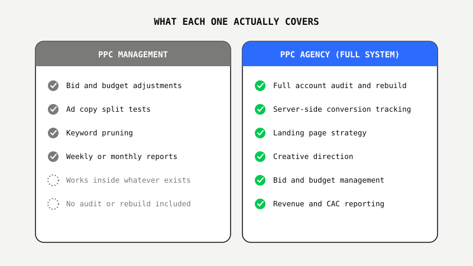
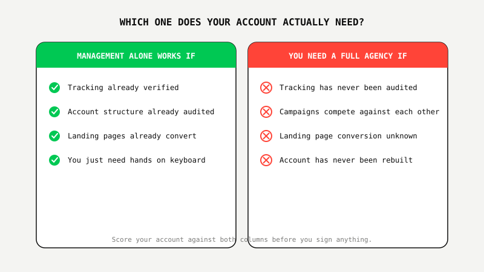

PPC Management vs. PPC Agency: What's Actually the Difference
 By Akshat Singh··7 min read·Paid Advertising
By Akshat Singh··7 min read·Paid Advertising
Key Takeaways
- PPC management is the execution work inside an account that already exists. A PPC agency owns the whole system around it: account architecture, conversion tracking, landing pages, strategy.
- Freelancers and management-only vendors typically sell bid adjustments, budget pacing, and reporting. They rarely touch tracking infrastructure or rebuild a flawed account structure.
- If your tracking has a gap or your campaigns were never audited, skilled management on top of that still optimizes a broken foundation. It looks active. The real problem stays untouched.
- The fastest way to tell which one you're being sold: ask whether they start with an audit and rebuild, or go straight to "optimizing" what's already there.
- The Google Ads Proof Program™ combines both: a full audit and rebuild in month one for $600, then ongoing management, not one or the other.
The Kitchen Renovation Problem
Imagine you want a better kitchen. You could hire a painter to repaint the cabinets every year or two. Fresh coat, looks a little better, same layout, same plumbing, same drawer that's never closed right. Or you could hire a contractor who tears out the layout, fixes the plumbing, rebuilds the cabinets, and then paints them.
Both people technically "worked on your kitchen." Only one of them changed how it actually functions.
That's the difference between PPC management and a PPC agency, and almost nobody explains it before you buy. The two terms get used interchangeably in searches and sales calls. They are not the same purchase.
What "PPC Management" Actually Means
PPC management is the ongoing execution work inside a Google Ads or Meta Ads account that already exists: adjusting bids, testing ad copy, monitoring budgets, and reporting on performance. It's a real skill. It's also a narrow one.
Freelancers, in-house marketers, and "management-only" vendors typically sell this. They log into an account, make adjustments inside a structure someone else built, and report back weekly. If that structure has a tracking gap or a flawed campaign architecture, management alone leaves it exactly where it was. Excellent bid management on top of a broken foundation is still a broken foundation.
What a Real PPC Agency Actually Means
A real PPC agency, not a freelancer with a logo, owns the entire system a campaign runs on: the account architecture, the conversion tracking, the landing pages the ads point to, and the strategy connecting all of it back to revenue instead of clicks.
Most agencies optimize campaigns. We optimize businesses. That distinction sounds like a slogan until you watch what each approach actually touches: one adjusts numbers inside a container, the other rebuilds the container first.
Doesn't it seem backwards to pay for "optimization" before anyone's checked whether the thing being optimized was built correctly?
The Real Difference, Side by Side
Here's what each one typically includes when you strip away the marketing language:
PPC management usually covers: bid and budget adjustments, ad copy split tests, keyword pruning, and a weekly or monthly report. It works inside whatever structure is already there.
A full PPC agency usually covers: a complete account audit and rebuild, server-side conversion tracking (so a browser blocker or Safari's privacy settings can't quietly erase a real lead), landing page strategy, creative direction, and reporting tied to revenue and CAC, not impressions.

Where Each One Breaks Down
Management-only breaks down in three specific places: tracking that's quietly losing conversions, campaigns structured to compete against each other in the same auction, and landing pages that kill conversion rate no matter how good the bidding is underneath them. None of those get fixed by better bid management. They get fixed by someone rebuilding the thing management sits on top of.
A full agency can be overkill in the other direction. If your tracking is already verified, your account structure has already been audited, and your landing pages already convert, you may just need hands on the keyboard, not a rebuild you don't need yet.
CTR and impressions don't pay salaries. Watch for reporting that stays there and never moves down to revenue, profit, CAC, or LTV. That's usually the tell that you're paying agency prices for management-only work.
How to Tell Which One You're Actually Being Sold
Ask two questions before you sign anything. First: "Do you start with a full audit, or do you start optimizing what's already there?" Second: "How do you handle conversions when a browser blocks your tracking pixel?" A management-only vendor answers the first question by describing their reporting cadence, not an audit. A real agency answers the second question with a specific, technical answer involving server-side tracking, not a shrug.

What Smart Businesses Are Doing About It
The businesses getting this right aren't choosing between management and an agency. They're refusing to pay agency prices for management-only work, and refusing to pay for a full rebuild they don't actually need. They ask for proof of scope before they commit to either.
That's the reasoning behind the Google Ads Proof Program™: a complete audit and account rebuild in your first month for $600, not a 12-month contract signed on a promise. You see the rebuilt structure, the real tracking setup, and the first results before you ever pay full agency-level fees for ongoing management. We've used this exact approach on real US accounts to reach $22.9M in revenue at 632% ROAS and, on a separate account, $6.43M in revenue at 1,375% ROAS with a cost per conversion of $51.12. That's what the "agency" side of this actually has to produce to earn the higher price.
See the difference between management and a real rebuild before you pay for either.
See The $600 Google Ads Proof Program™ ↗